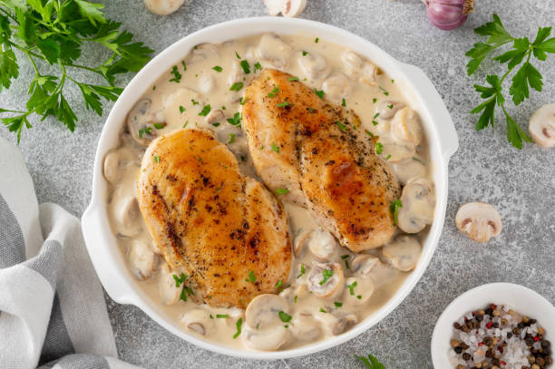
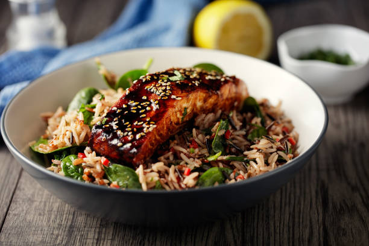
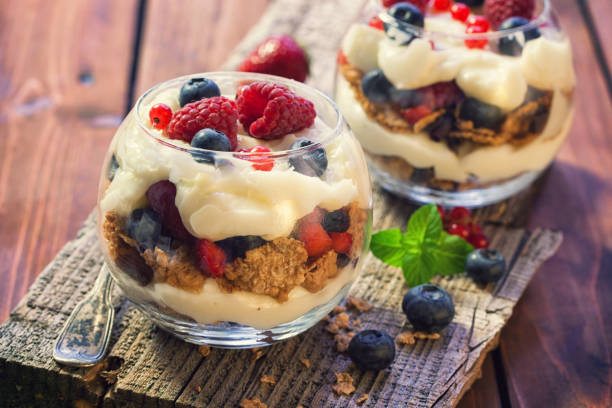

Creamy Garlic Parmesan Chicken
PREP TIME:
45 MINUTES

Ingredients
- 4 boneless, skinless chicken breasts
- 2 tbsp olive oil
- 4 garlic cloves (minced)
- 1 cup heavy cream
- 1/2 cup chicken broth
- 1 cup grated Parmesan cheese
- Salt & pepper to taste
- Fresh parsley (chopped, for garnish)
Instructions
-
Season chicken breasts with salt, pepper, and Italian
seasoning.
-
Heat olive oil in a large skillet over medium heat and sear
chicken until golden brown (about 5 minutes each side). Remove
and set aside.
-
In the same skillet, add minced garlic and cook for 1
minute.
-
Pour in heavy cream and chicken broth. Stir and bring to
a gentle simmer.
-
Add Parmesan cheese and whisk until sauce thickens.
-
Return chicken to skillet, spoon sauce over, and simmer for
5–7 minutes until chicken is fully cooked.
-
Garnish with parsley and serve with pasta, rice, or vegetables.
Honey Garlic Salmon
PREP TIME:
50 MINUTES

Ingredients
- 4 salmon fillets (about 6 oz each)
- 3 tbsp honey
- 2 tbsp soy sauce
- 1 tbsp fresh lemon juice
- 3 garlic cloves (minced)
- 2 tbsp olive oil or butter
- Salt & pepper to taste
- Fresh parsley or green onions (for garnish)
Instructions
-
In a small bowl, whisk together honey, soy sauce, lemon juice,
and garlic.
-
Pat salmon fillets dry with a paper towel, then season lightly
with salt and pepper.
-
Heat olive oil or butter in a large skillet over medium-high
heat.
-
Place salmon fillets skin-side down and cook for 3–4 minutes.
-
Flip salmon, pour honey-garlic mixture over, and cook another
3–4 minutes until salmon is cooked through and sauce thickens
into a glaze.
-
Spoon glaze over salmon and garnish with parsley or green
onions.
-
Serve with steamed rice and veggies for a complete meal.
Strawberries & Cream Parfait
PREP TIME:
20 MINUTES

Ingredients
- 2 cups fresh strawberries (sliced)
- 1 cup whipped cream (or vanilla yogurt for lighter version)
- 1/2 cup granola or crushed cookies
- 1 tbsp honey or sugar (optional)
Instructions
-
In a glass or bowl, layer strawberries at the bottom.
-
Add a spoonful of whipped cream (or yogurt).
-
Sprinkle granola or crushed cookies on top.
-
Repeat layers until glass is full.
-
Drizzle with honey if desired and serve immediately.